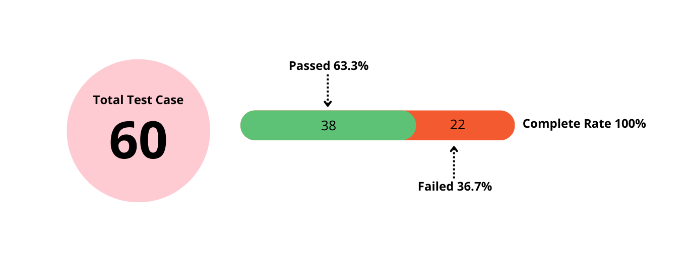
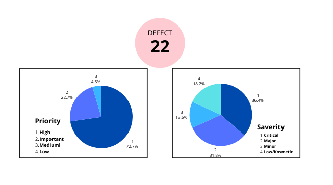

BACKGROUND
GrowiaShop adalah Situs web eCommerce yang awalnya berfungsi sebagai halaman arahan untuk produk di toko offline.
Dengan meningkatnya permintaan untuk pembelian online, GrowiaShop memperkenalkan proses bisnis baru untuk memungkinkan pengguna mendaftar dan melakukan transaksi online.
Selain itu juga terdapat fitur pengelolaan stok pada sisi admin.
Dengan dibangunnya situs web tersebut maka memerlukan pengujian (testing).
OBJECTIVE
Kualitas dan Keandalan: Memastikan bahwa situs web berfungsi dengan baik dan dapat diandalkan, sehingga pengguna dapat berbelanja tanpa masalah.
Keamanan: Mengidentifikasi dan memperbaiki kerentanan keamanan untuk melindungi data pengguna dan transaksi dari potensi ancaman.
Pengalaman Pengguna: Meningkatkan pengalaman pengguna dengan memastikan navigasi yang mudah, waktu pemuatan yang cepat, dan tampilan yang responsif.
Kompatibilitas: Memastikan bahwa situs web berjalan dengan baik di berbagai perangkat dan browser, sehingga menjangkau lebih banyak pengguna.
Fungsionalitas: Menguji semua fitur dan fungsionalitas, seperti proses pembayaran, pencarian produk, dan manajemen akun, juga pengelolaan produk untuk memastikan semuanya berjalan sesuai harapan.
Regresi: Memastikan bahwa perubahan atau pembaruan pada situs tidak menyebabkan masalah baru, menjaga integritas sistem secara keseluruhan.
Dengan melakukan software testing yang komprehensif, diharapkan Growiashop dapat meningkatkan kepuasan pelanggan, mengurangi biaya pemeliharaan di masa depan, dan membangun reputasi yang baik di pasar e-commerce.
TECHNOLOGY
Perangkat : Lenovo Thinkpad T490s
Browser : Chrome, Firefox
TESTING PROCESS
Test Planning : Proses pengujian dimulai dengan mengidentifikasi area kritis dari aplikasi web, seperti login, registrasi, produk, keranjang belanja dan admin. Pengujian dibagi menjadi pengujian fungsional dan
non-fungsional, dengan tujuan untuk memastikan bahwa setiap komponen bekerja sesuai dengan spesifikasi.
Test Case Design : Test Case dirancang berdasarkan kriteria keberhasilan fungsi utama seperti login dan registrasi. Saya membuat kasus uji untuk mencakup skenario positif (input yang valid) dan skenario negatif (input
yang tidak valid).
Execution : Pengujian dilakukan dengan menggunakan kombinasi pengujian eksplorasi dan pengujian skrip.
Berikut Test Case Document
DEFECTS & REPORTING
Defect Tracking & Reporting: Cacat yang ditemukan selama pengujian dilacak dan didokumentasikan dengan menggunakan Ms Excel, dengan rincian seperti deskripsi cacat, prioritas, dan langkah-langkah reproduksi.
Berikut Defect Report Document
TESTING SUMMERY ILLUSTRATIONS

DEFECT SUMMERY ILLUSTRATIONS

CONCLUSIONS
Dari 60 test case yang telah di identifikasi, 38 case dinyatakan berhasil dan 22 case gagal.
Telah ditemukan 22 defect pada situs GrowiaShop, dimana terdapat sekitar 30% defect yang memiliki priority dan saverity yang tinggi
Beberapa fitur pada situs web GrowiaShop masih berada pada level citical dan important yang dapat mempengaruhi fungsi dari situs tersebut
Challenges & Solution
Challenges :
1. Salah satu tantangan yang signifikan adalah pada kerentanan input data pada formulir login.
2. Masalah lain adalah terkait dengan keranjang belanja, terutama mengenai penambahan dan pengurangan item
3. masalah berikutnya adalah pada proses checkout dengan sistem pembayaran yang masih gagal.
Solution :
1. Untuk menguji pada kerentanan input data adalah dengan memasukkan input data yang tidak valid
2. untuk mengatasi permasalah kernajang belanja dilakukan uji skenario batas, seperti Penambahan item melebihi stok yang tersedia dan pengurangan item kurang dari 1 item
3. untuk pengujian pada proses checkout dilakukan dengan membuat skenario pengujian manual yang mencakup: Pengisian data pengguna (alamat pengiriman, metode pengiriman). Pilihan metode pembayaran (cod dan kartu kredit).
Simulasi pengguna yang membatalkan atau mengubah metode pembayaran.